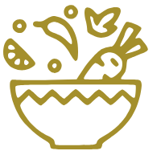
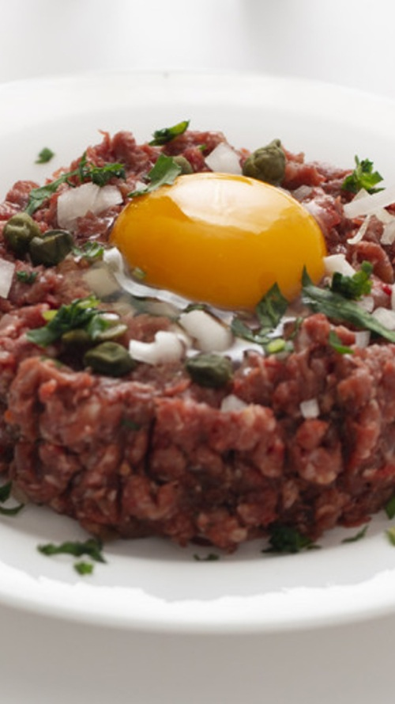
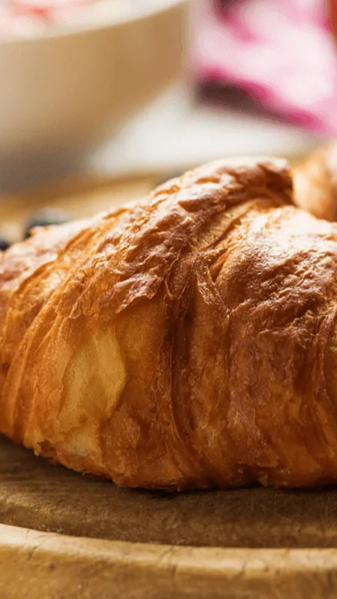
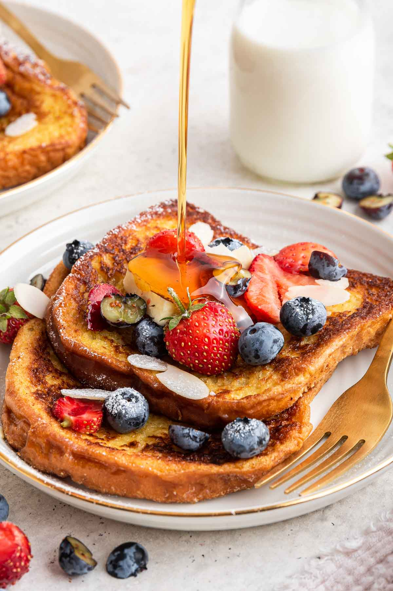

Fresh, Local
Explore More →

Our Story
Het begon allemaal met een droom en de liefde voor de geur van versgebakken brood.
Al generaties lang staat onze familie elke ochtend vroeg in de bakkerij om met zorg en vakmanschap
het lekkerste brood en gebak te maken.
Wat ooit klein begon met een traditionele oven en een handvol recepten,
is uitgegroeid tot een plek waar klanten samenkomen om te genieten van
ambacht, kwaliteit en warmte.
Onze passie is niet alleen bakken, maar ook het creëren van momenten van geluk bij iedere hap.
Why Dine with Us?
Nestled in the heart of downtown, BRISTO offers an intimate
dining experience where culinary artistry meets cozy charm.
Artisan
Explore More →Inviting
Explore More →Community-
Explore More →Our Customers' Favourite
Iedere dag hebben we één topper die keer op keer gekozen wordt door onze klanten.
Of het nu gaat om onze knapperige croissants,
romige slagroomtaart of het traditionele volkorenbrood –
deze klassiekers blijven absolute favorieten.
Onze klanten noemen het de perfecte combinatie
van ambacht, smaak en liefde voor het vak.
Kom zelf proeven en ontdek waarom dit de favorieten van velen zijn!

Croissants Loaf French Toast

Croissants Loaf French Toast
.jpg)
Smoked Salmon Scramble
